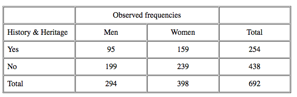
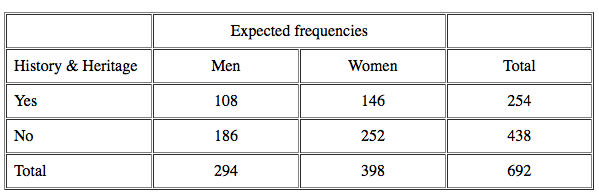

The chi-square statistic is a normalized sum of squared deviations between observed and theoretical frequencies.
Formula:
$ \chi^2 = \sum\limits_{c} { { ( O - E )^2 } \over { E } } $
Legend:
- $c = $ Cells in the contingency table constructed from the two variables
- $O = $ Observed frequency: counted from the actual result
- $E = $ Expected frequency: calculated frequency representing the null hypothesis that there is no relationship between variables.
- $\chi^2 = $ Chi square statistics
Expected and Observed Frequencies From Contingency Table:
For example, if we have the following survey results:

Then we can calculate our expected frequencies (E) based on the proportion of respondents who said yes versus no. It can also be calculated for each cell by the row total with the column total divided by the grand total (e.g. 254 x 294 : 692 = 108).

This second table, where no relationship exists between the interest in attending history and heritage attractions and events and gender, also represents the null hypothesis or Ho. (Therefore, if a study says that it "fails to reject the null hypothesis", it means that no relationship was found to exist between the variables under study.)
Hence, one can now use the the chi-square statistic to get the results.